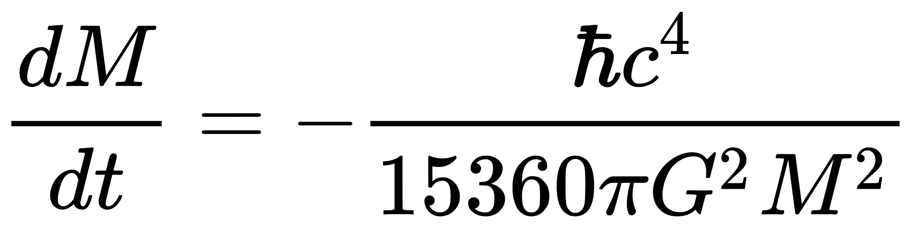
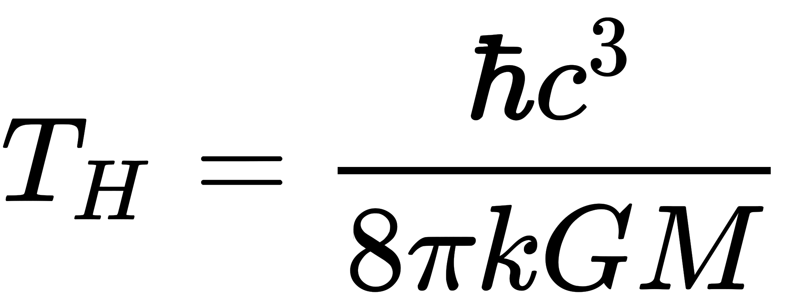
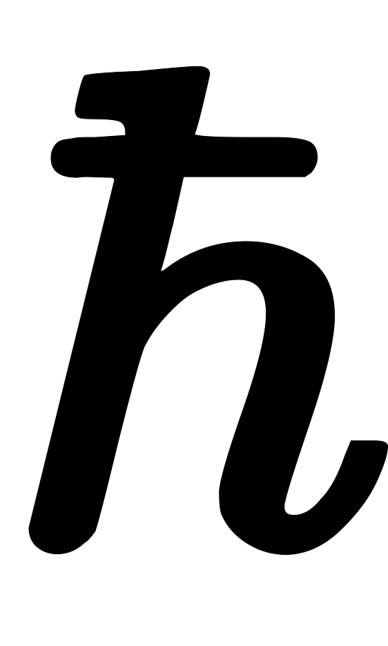
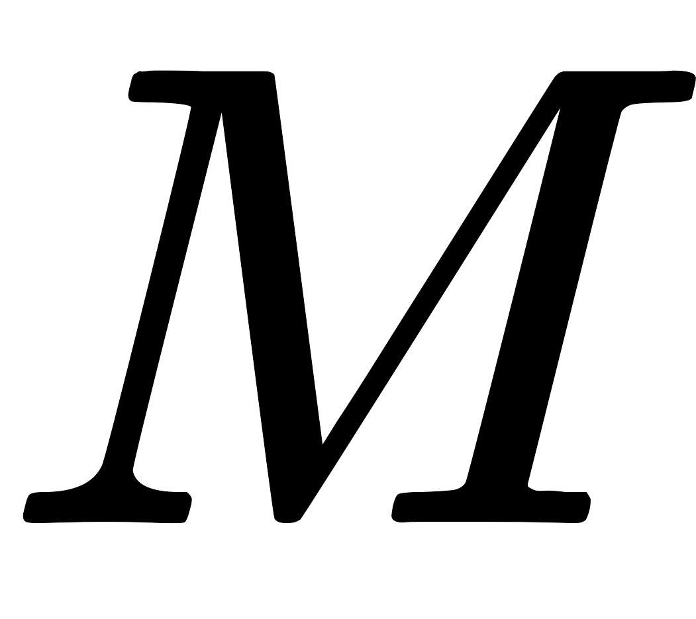
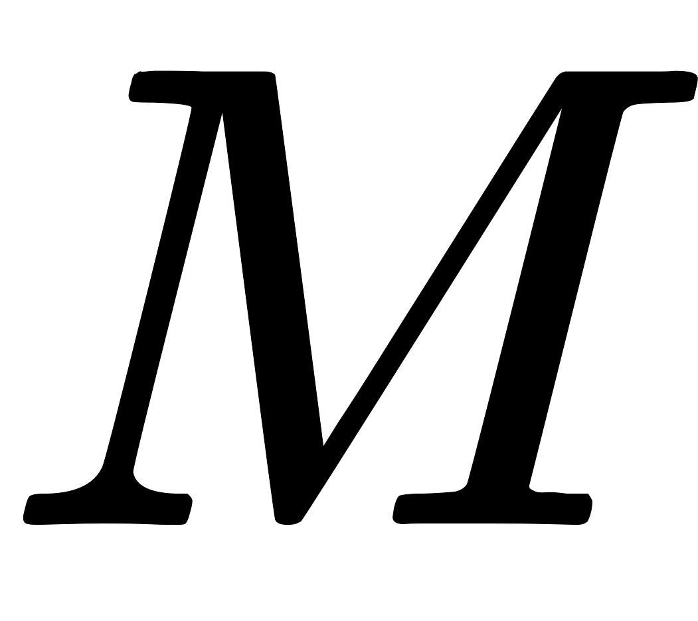
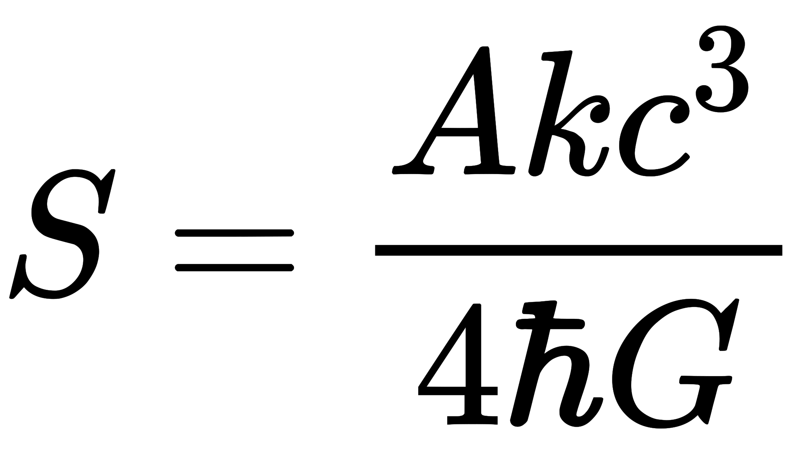
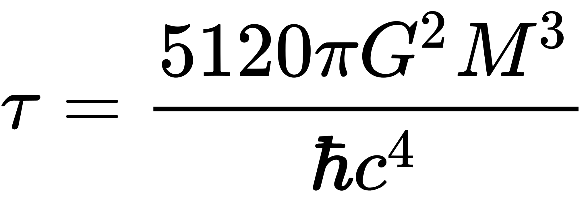

Термодинамика и испарение чёрных дыр
Представления о чёрной дыре как об абсолютно поглощающем объекте были скорректированы А. А. Старобинским и Я. Б. Зельдовичем в 1974 году — для вращающихся чёрных дыр, а затем, в общем случае, С. Хокингом в 1975 году. Изучая поведение квантовых полей вблизи чёрной дыры, Хокинг предположил, что чёрная дыра обязательно излучает частицы во внешнее пространство и тем самым теряет массу.[33] Этот гипотетический эффект называется излучением (испарением) Хокинга. Упрощённо говоря, гравитационное поле поляризует вакуум, в результате чего возможно образование не только виртуальных, но и реальных пар частица-античастица. Одна из частиц, оказавшаяся чуть ниже горизонта событий, падает внутрь чёрной дыры, а другая, оказавшаяся чуть выше горизонта, улетает, унося энергию (то есть часть массы) чёрной дыры. Мощность излучения чёрной дыры равна: , а потеря массы: .
Предположительно, состав излучения зависит от размера чёрной дыры: для больших чёрных дыр это в основном безмассовые фотоны и лёгкие нейтрино, а в спектре лёгких чёрных дыр начинают присутствовать и тяжёлые частицы. Спектр хокинговского излучения для безмассовых полей оказался строго совпадающим с излучением абсолютно чёрного тела, что позволило приписать чёрной дыре температуру: , где:  — редуцированная постоянная Планка,  — скорость света,
— скорость света,  — постоянная Больцмана,
— постоянная Больцмана,  — гравитационная постоянная,  — масса чёрной дыры.
— гравитационная постоянная,  — масса чёрной дыры.
На этой основе была построена термодинамика чёрных дыр, в том числе введено ключевое понятие энтропии чёрной дыры, которая оказалась пропорциональна площади её горизонта событий: , где:  — площадь горизонта событий.
— площадь горизонта событий.
Скорость испарения чёрной дыры тем больше, чем меньше её размеры. Испарением чёрных дыр звёздных (и тем более галактических) масштабов можно пренебречь, однако для первичных и в особенности для квантовых чёрных дыр процессы испарения становятся центральными.
За счёт испарения все чёрные дыры теряют массу и время их жизни оказывается конечным: . При этом интенсивность испарения нарастает лавинообразно, и заключительный этап эволюции носит характер взрыва, например, чёрная дыра массой 1000 тонн испарится за время порядка 84 секунды, выделив энергию, равную взрыву примерно десяти миллионов атомных бомб средней мощности.
В то же время, большие чёрные дыры, температура которых ниже температуры реликтового излучения Вселенной (2,7 К), на современном этапе развития Вселенной могут только расти, так как испускаемое ими излучение имеет меньшую энергию, чем поглощаемое.
Без квантовой теории гравитации невозможно описать заключительный этап испарения, когда чёрные дыры становятся микроскопическими (квантовыми).